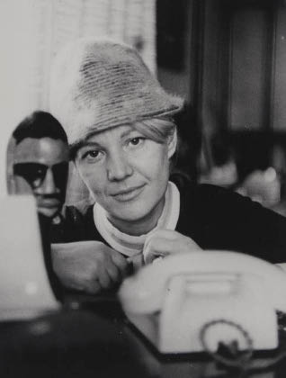
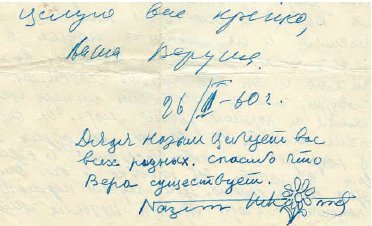
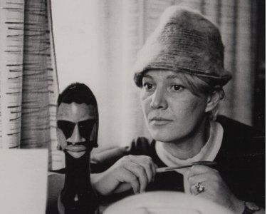

Ölümünden kısa bir süre önce “Bu kitabı yazan cesur genç kadına saygı duyuyorum,” demişti annem. Gözleri 30 küsur yıl öncesine dalmıştı bunları söylerken.
31 yaşında Nâzım’ı toprağa vermesinin ardından Vera, acı ve yalnızlıkla mücadele etmek zorunda kalmıştı. Yanında insanlar varken zaaflarını göstermek istemezdi. Ancak gündüzleri, mezarlığa gidip Nâzım’la konuşabiliyordu. Nâzım’dan sonraki ilk yıl, her gün yaptığı bu ziyaretlerini anımsıyorum. Bazen beni de götürürdü yanında. On bir yaşındaki bir kız çocuğu için acı deneyimlerdi bunlar. Önce çiçek almak için pazara uğrardık. Annem, “Bunlar hoşuna gider mi acaba?” kaygısıyla seçerdi buketi. Mezar başına geldiğimizde, toprağı okşar, (artık orada olmayan) banka otururdu. Yüzünde tuhaf bir ifade belirir ve beni ve etrafta olan bitenleri artık görmez olurdu. Ona engel olmak mümkün değildi. Yardım etmek ise imkânsızdı. Uzaklarda bir yerlerde onunla buluşurdu sanki. Bana hiç bitmeyecekmiş gibi gelen sürenin sonunda gerçek dünyaya döner ve neredeyse neşeli bir sesle “Yarın görüşmek üzere, Nâzım!” derdi. Annemin o günleri hâlâ hafızamda tazedir. Büyüyüp de Vera’nın kitabını okuduğumda, onu kurtaran şeyin, o uykusuz geceler ve o zaman başlayıp yaşamının son günlerine dek sürdürdüğü Nâzım’la sohbetleri olduğunu anladım.
19 Mart 2001’de öldü annem. Geriye gözü gibi baktığı ve çok sevdiği Nâzım’ın evi kaldı. Bir de Vera’nın mektuplar, notlar, senaryolar, taslaklar ve çok sayıda dokümanla mektuptan oluşan dağınık arşivi. Bunların tamamını düzenlemeye başladığımda, annemin Nâzım’la sıkı sıkıya bağlı yaşamındaki pek çok bilinmezi ortaya çıkartacağımı biliyorum. Bunu yapabilmek için gerekli gücü topladığımda, işe girişeceğim.
Bu kitapla buna başlamış olduğumu sanıyorum. Daha önce yayımlanmış anı kitabını annemin el yazmalarıyla karşılaştırdığımda pek çok önemli olayın atlanmış olduğunu fark ettim. Belli ki zamanın gerekleriydi bunlar. Dünyaya mal olmuş bir şairin yaşamının en son ve mutlu dilimini onu sevenlerden esirgememek gerektiğine karar verdim. Bu zorlu uğraş için annemin anıları, hayat karşısında bana örnek olan duruşu güç verdi.
Vera Tulyakova 19 Mayıs 1932’de Moskova yakınlarında küçük bir yerleşim yeri olan Bolşevo’da doğdu. Babası, dedem Vladimir Tulyakov gönüllü olarak cepheye gitmiş ve 1943’te cephede ölmüş. Onu hiç görmedim. Anneannemin ve annemin anlattıklarından tanıdım onu ve Moskovalı eski bir tüccar ailesinden geldiğini, savaştan önce oldukça iyi koşullarda yaşadıklarını öğrendim. Babaannem Yevgeniya Yusupova’nın Rus tarihinde önemli bir yere sahip bir hanedan ailesinden geldiğini de annem gururla anlatmıştı bana.
Devrimden sonra her şeylerine el konulmasını ailede bir tek dedem kolaylıkla kabullenmişti. Devrime ve onun adaletine inanmıştı çünkü. Tıpkı Nâzım Hikmet gibi.
Vera’nın annesi, anneannem Mariya Koptelova’nın babası ise büyük bir yurtluğun idarecisiymiş. 1917’de, ana konağın merdivenlerinde Bolşevikler tarafından vurulmuş. Tek isteği sorumluluğunu taşıdığı eşyaları, talan etmeye gelen kalabalığı durdurmaktı.
Anneannem, büyük ağabeyi tarafından büyütülmüş. Annem Vera’nın kitabında bahsettiği “Kolya Dayı” odur. Devrimden önce Sorbonne öğrencisi olan Kolya Dayı, Sovyet yönetiminden yaşamının sonuna dek nefret etti.
Küçük yaşta öksüz kalan anneannem yaşamını çocuklara, özellikle de anası babası olmayanlara adamıştı. Anneannem, annemi doğurduktan sonra çocuk bakımevinde çalışmaya başlamış, sık sık annemi de iş yerine, öksüz ve yetim çocukların yanına götürmüştü. Hepsi bir örnek giyinmiş çocukları ben de anımsıyorum. Ben de anneannemin bu hayat okulundan nasibimi aldım.
Annem “babasının kızı”ydı ve onu çok severdi. Dediklerine ve fotoğraflarda görüldüğüne göre, bir o kadar da benzerdi dedeme. Savaş başlayıp da dedem cepheye gittiğinde mutlu günler sona erdi. Anneannemin çalıştığı çocuk bakımevi, Tatar köyü olan Solouşi’ye taşındı. Anneannemin asla hatırlamak istemediği o günlerden annem bana bahsetmiş ve kısa sürede Tatarca öğrendiğini, oranın yerlileri ile nasıl ahbap olduğunu kendisi anlatmıştı. Nâzım Hikmet’in Ekber Babayev’e annemin dış görünüşü ile ilgili söylediği Türkçe bir cümle üzerine annemin hafızasının bir yerlerinde kalmış Tatarca, Nâzım’la ilk tanıştığı gün canlanıvermişti. O anda kendini kötü hissetmiş olsa da her zaman Tatar dilinin tınısı, Tatar müziği mutlu etmiştir annemi. Hatta mutlu olduğu anlarda mırıldandığı bir Tatar şarkısını bile anımsıyorum.

Moskova ve çevresinin zorunlu boşaltılmasının ardından başlayan Tataristan günleri zordu. Paraları karınlarını doyurmaya bile yetmiyordu. Beraberlerinde getirdikleri tüm eşyalarını yiyecekle değiştirmek zorunda kalmışlardı. Anneannem hastalandığında bütün yük annem Vera’nın omuzlarına kalmıştı. Annem dramatize etmeden, hatta gülerek eski giysileri söküp ördüğü şapkaları pazarda sattığını, bazen de yumurta veya ekmek karşılığında pazarda çevirmenlik yaptığını anlatırdı. Yerli halkın Rusça bilmemesi, oraya yerleştirilmiş Rusların ise Tatarca bilmemesi annemin işine yaramıştı. Bin bir güçlükten sonra, annemle anneannem eve dönebilmişler ve dedemin ölüm haberini 1943’te Moskova’da almışlardı.
Annem babasının ölümüyle yaşadığı acıyı ne o zaman ne de sonrasında asla paylaşmadı. Bu üzerinde konuşulması yasak bir konuydu sanki.
Yaşam devam ediyordu. Anneannem sağlığı düzelip yeniden çocuk yetiştirme yurdunda çalışmaya başladı. Ve kısa bir süre sonra onlara iki oda bir ev verdiler. Belli ki devrim öncesinde, Moskovalı varlıklı ailelerin kır evi olarak kullandıkları bu kolonlu bina, Sovyetler Birliği zamanında adeta karınca yuvasına dönmüş ve pek çok aile buraya yerleştirilmişti. Annemle babamın boşanmasının ardından anneannemle beraber yaşadığım bu evi, bahçesindeki kuyuyu, ocağı, beyaz leylak ağacını anımsıyorum.
1950 yılında liseyi bitiren annem Devlet Sinema ve Senaryo Enstitüsü’ne girdi. Ülkenin en prestijli yükseköğrenim kurumlarından olan bu enstitünün sınavlarına hazırlanmak için hiç kimseden yardım almadı. Kendi başına başardı bunu.
Ölümünden iki hafta önce onunla televizyon seyrediyorduk. Ünlü sinema sanatçılarını anlatan belgesel bir programdı izlediğimiz. Kadın sanatçılardan biri annemle beraber okumuştu. Ve annem o zaman birdenbire giriş sınavını nasıl verdiğini anlatmaya başladı. O zamanın imkânsızlıkları içinde, akıl almaz güçlüklerle özel olarak imtihan için dikilmiş açık mavi kareli beyaz elbisesini anımsadı. Arkadaşlık ettiği delikanlı, uğur getirmesi için “en değerli eşyasını”, ünlü futbol takımı “Spartak”ın rozetini vermişti anneme. Dönemin ünlü filmi, toplumsal içerikli “Genç Muhafız” adlı film hakkında komisyon üyeleriyle nasıl tartıştığını anlattı bana. Sonra ansızın avucunda sıktığı uğurlu rozetin olmadığını fark etmiş, elbisesinin yeniliğine aldırmadan eteklerini topladığı gibi, masanın altına girip öğretmenlerin dizlerinin dibinde emekleyerek hazinesini aramıştı. İçine düştüğü durum yüzünden “uğur” ve “en değerli” kavramlarını komisyon üyelerine açıklaması gerekmiş ve onlar da gülmüşlerdi.
Vera’nın beraber okuduğu arkadaşları içinde Anatoli Stepanov da vardı. Mücadeleci, futbolcu ve son derece kültürlü bir insandı. İkinci sınıftayken evlendiler ve 1952 yılında ben doğdum. Önceleri babamın ailesi ile birlikte yaşıyorduk. Sonra Rusakovskaya Sokak’ta, birden çok ailenin birlikte yaşadığı komünal bir daireye taşındık. Nâzım Hikmet’in Vera’yı aramak için sık sık telefon ettiği yere. Tek odamızı; mutfağı, banyo ve tuvaleti paylaştığımız neşeli komşularımızı hayal meyal hatırlıyorum.
Annemle babam 1955’te bitirdiler enstitüyü. İkisi de redaktör olarak çalışmaya başladı. Babam “Mosfilm”de, annem muhteşem çizgi filmlerin yapıldığı “Soyuzmultifilm” stüdyosunda çalışmaya başladı. Maddi sıkıntımız vardı. Annem sinema ile ilgili makaleler yazıyor, babam ise ilk senaryoları üzerinde çalıflıyordu. Beni de düzenli olarak Bolşevo’ya anneannemin ve üvey dedem Grigori’nin yanına bırakıyorlardı. Çalışma tempoları iyice artınca sürekli olarak orada yaşamaya başladım. İlk dönemlerde, hafta sonları ve tatillerde ikisi beraber gelirdi yanıma. Ama sonraları ayrı ayrı gerçekleştirmeye başladılar ziyaretlerini. Ailemizin yıkılmakta olduğunu anlamayacak kadar küçüktüm.
Sonra annem gitti. Bolşevo’ya gelen babam sımsıkı kucakladı beni. Onun ağzından bir kere bile annem hakkında kötü bir söz duymadım.
Geçenlerde bir mektup geçti elime:
“Canlarım Benim, Canım Annem, Dedecik ve Harika Kızım,
Mektubunuz için teşekkür ederim. Ah Anyuta, Anyuta, neler yapıyorsun öyle?[1] İyileşmekte olmana sevindim, belki bir daha böyle kötü hastalıklara yakalanmazsın. Anneciğim, benim için endişelenme. Tüm arzuların elbette gerçekleşecek. Şimdi çözüm Tolâ’ya[2] bağlı. Eğer o boşanmayı kabul ederse hemen evleneceğiz. Kabul edeceğini sanıyorum. Moskova’ya döndüğümüzde onunla konuşacağım. Şimdilerde çok üzüldüğünü biliyorum. Raya[3] yazdı bana, ama elden ne gelir? Onunla dost kalmak istiyorum, yapabileceğim başka bir şey yok onun için. Annesi Anna Efimovna ile birlikte yaşıyormuş şimdi. Anneciğim, onunla bu konuları konuşma, eskiden olduğu gibi iyi davran ona. Sizden çok rica ediyorum. Şimdi zor durumda.
Kislovodsk’tan Bakû’ye gideceğiz. Nâzım’ın şoförü Yura, Volga’ yla buraya geldi. Çevreyi geziyoruz. Bakû’ye Soçi üzerinden gideceğiz. Gönderdiğiniz mektubu Nâzım’a okudum, çok mutlu oldu. Artık gerçek bir ailesi olduğunu ve iyi yakınları olduğunu söylüyor. Hepinizi çok seviyor. Moskova’da onun Novopesçannaya Sokağı’ndaki evinde yaşayacağız ve sık sık ziyaretinize geleceğiz. Herhalde, hepsi bu. Burada dinlenmek çok güzel. Yemekler çok iyi ve harika bir hava var. Doğrusu, Nâzım’ı sık sık toplantılara davet ediyorlar. Tüm görüşme ve konuşmaları içten ve tören ortamında geçiyor. Size selamlarını ve öpücüklerini gönderiyor. 12’sine kadar[4] Kislovodsk’ta olacağız, martın ilk günlerinde Moskova’da oluruz. Anneciğim, paketi aldınız mı?..[5] Canlarım benim, sizleri çok seviyorum ve çok özledim. Geldiğimizde her şey yoluna girecek ve siz de kızınız için endişelenmekten kurtulacaksınız.
Sevgiyle öpüyorum, sizin Veruşa
26. 01. 60”
Sayfanın altında farklı bir el yazısıyla bir not var. Belli ki zorlukla çizilmiş Rus harfleri ile “Nâzım amca, siz tüm yakınlarını öpüyor. Vera’nın varlığı için teşekkür ederim. Nâzım Hikmet” yazılmış ve bildik imza var. “Hik” ve “met” hecelerinin arasında taç yaprakları sarkan bir çiçekcik çizilmiş, iki de yaprağı var.

“Nâzım amca” benim için yakıştırılmış bir hitaptı. Ben de buna uymuş, böyle demeye başlamıştım Nâzım Hikmet’e. Bir keresinde Pesçannaya Sokağı’ndaki evde üçümüz kahvaltı ediyorduk. Telefon çalmış, annem bakmaya gitmişti. Âdet olduğu üzere Nâzım amca diyerek bir şey sordum Hikmet’e. Birden ciddileşti ve “Anyuta, bana baba diyemez misin? Annene bir soralım bakalım, belki bize izin verir,” dedi. Donup kaldığımı ve yanıt veremediğimi anımsıyorum. O sırada Vera yanımıza geldi ve Hikmet, oldukça heyecanlı bir şekilde (masadaki gergin hava hâlâ aklımdadır) aynı soruyu başka kanıtlar ekleyerek anneme sordu. Annem net bir ses tonuyla kestirip attı: “Anyuta’nın sadece bir babası var.” Ve bir daha bu konuya hiç dönmedik. Vera daha sonra, Hikmet nedeniyle babamdan kopacağımdan endişe ederek aradaki mesafeyi korumaya çalıştığını söylemişti bana. Haklıydı bence, adil olmaya çalışıyordu.
Hikmet’in çalışma masasının üstünde fotoğrafı duran Memed’e olan özlemini şimdi anlıyorum. (Annem, Nâzım’ın ölümünden ancak yıllar sonra ve Memed’in Paris’te babasını pek de iyi anmadığı bir makalesinin yayımlanmasının üzerine kaldırdı o fotoğrafı.) Herhalde, “baba” sözcüğünü duyabilmekti Nâzım’ın arzusu; varsın Rusça olsun, varsın Vera’nın kızı söylesin.
Nâzım’la tanışmamızı çok net anımsıyorum. İlk kez anneannem getirdi beni Pesçannaya Sokağı’ndaki eve. Misafir odasına geçmiştik annemle. Oradaki uzun masanın önünde, sanki ışıklar içinde uzun boylu bir adam duruyordu. Bana gülümsedi ve “Anyuta! Anyuta!” diye adımı tekrar etti. Utanarak yaklaştım yanına, gözlerimi kaldırdım. Bana doğru eğildi ve elimi alıp çok nazik bir hareketle öptü. Küçük bir Sovyet kızı için bir şoktu bu. Şimdi bile o an düştüğüm dehşeti anımsıyorum. Ruh halim yüzüme yansımış olacak ki annem gülmeye başlamıştı. Sonra beni sakinleştirdi. İkisi birden bir şeyler söylemişti bana. Ama aklımda kalanlar sadece hisler: Bıyıklarının tenime değişi, hafif bir erkek kokusu, kahverengi lekelerle kaplı yanaklarının ipeksi yumuşaklığı. Bir de annemle birbirlerine bakışlarını anımsıyorum. O zaman, artık annemin yaşamındaki en önemli insanın Nâzım Hikmet olduğunun ayrımına varıp varmadığımı anımsamıyorum; herhalde, henüz fark etmemiştim.
Sonu gelmez seyahatlerinden fırsat buldukça Bolşevo’ya bizi ziyarete gelirlerdi. Ama çoğunlukla pazar günleri ve tatillerde ben Moskova’ya onların yanına giderdim. Anneannem, törensel bir ifadeyle Nâzım Hikmet’in çok büyük bir şair olduğunu, 17 yıl hapis yattığını ve kalbinden hasta olduğunu söylemişti bana. Bu nedenlerden dolayı, onu rahatsız etmemem ve bıktırmamam gerekiyordu. Ben de sessiz olmaya ve dikkat çekmemeye özen gösteriyordum. Bu hiç de zor değildi. Moskova’daki evde benim anlayamayacağım bir yaşam sürüyordu. Sürekli birileri geliyor, birileri gidiyordu. Gülüyorlar, tartışıyorlar, şiirler okuyorlardı. Ne zaman ciddi konulardan konuşmaya başlasalar, telefonun üstüne kocaman bir yastığı sıkıca koyuyorlardı. Bu, o zamanlar KGB’nin kulaklarından kurtulmak için düşünülmüş ve hemen herkesin bildiği günlük bir ritüeldi. Konuklar gecenin geç saatlerine kadar her zaman uzun masamızın başında, alçak lambanın altında otururlardı. Nasıl olduysa, annem Vera’nın ölümünden kısa bir süre önce, masanın örtüsünü kaldırmıştım. Annem kızıla çalan masanın üstünü okşadı ve hüzünle “Bu masanın dile gelip de uzun yaşamı boyunca dinlediklerini anlatamaması ne yazık...” dedi.

Sabahları ev sessiz olurdu hep. Nâzım Hikmet çalışma odasının kapısını kapatıp çalışmaya dalardı. Biz kâh fısıltıyla, kâh alçak sesle konuşurduk. Telefonun her çalışında annem çabucak ahizeye koşardı. O zaman çalışma odasında Hikmet’in işlerinin nasıl olduğu anlaşılırdı. Eğer Nâzım amca, kapıyı aralayıp arayanın kim olduğunu sorarsa bu çalışmasının pek de verimli geçmediğine işaretti, eğer herhangi bir nedenle mutfağa yanımıza kadar gelirse işler pek kötü demekti. Ama telefonun sesine hiçbir tepki vermezse, istediği gibi yazdığını anlardık. Öğlen yemeği için masaya oturduğumuzda şakalar yapar, her şeyden keyif alırdı.
Moskova’daki evde en çok gördüğüm şey, ya bir seyahat arifesinde hazırlanan ya da dönüşte açılan bavullardı. Annemle Nâzım amcanın her seferinde yurtdışından getirdikleri hediyeler beni zor durumda bırakırdı. Bolşevo’da fabrika işçilerinin çocuklarının gittiği bir okula gidiyordum. O zamanlar, Sovyet sanayii başka türlüsünü üretmediği için, ülkemizin tüm çocukları aynı soluk, pek de güzel olmayan eşyaları kullanırdı. Nâzım Hikmet ise evde giydiği deve tüyünden bej hırkasıyla bile çok şıktı. Annemi de süslenmeye zorlardı. Bir keresinde, her zaman gittikleri bir yere hazırlanırken kimin ne giyeceği konusunda neşeyle tartıştıklarını anımsıyorum. Bana da Batı’dan açık renkli elbiseler, komik ayakkabılar, SSCB’de kimsenin görmediği renkli külotlu çoraplar getirirlerdi. Bunlar üzülmeme neden olurdu. Okulda çocuklar bana laf atar, “Anyuta’nın yeni paçalı donuna bakın,” derlerdi. Sessizce ağlar, güzel giysiyi saklayıp diğerleri gibi olmadığımız için acı çekerdim. Sovyetler Birliği değer yargılarına göre bunlar utanılacak şeylerdi. Nâzım Hikmet’in belli ölçülerde bunu anladığını sanıyorum. Annem, elinizdeki kitapta Nâzım amcanın benim için uçakta neler aşırdığını anlatıyor. Benim için çalınmış ilk şekerlemelerin tadı hâlâ damağımda, Nâzım amcayla ortak sırrımızın keyfi yüreğimdedir.
Hikmet’in 60. yaş gününü kutlamamızı anımsıyorum. Çok mutluydu o gün. Evimiz her zamankinden daha çok dolup taşmıştı konuklarla. 60 ayrı kâğıdın her birine iyi dileklerimi yazmış, onları anneannemle 60 farklı renkli zarflara koymuştuk. Zavallı Nâzım amca, bu kalın kâğıt yığınını alıp sabırla okumuştu hepsini.
Annemle Nâzım amcanın beni Satir (Yergi) Tiyatrosu’na “Demokles’in Kılıcı” adlı oyununun ilk gösterimine götürdüklerini anımsıyorum. Beni locaya oturtup kendileri partere gitmişlerdi. O yıllar, Sovyetler Birliği’nde ağır tasfiyeci değerlerin hüküm sürdüğü bir dönemdi. Oyun ise bu değerlerin dışındaydı. Yan locada oturan pek de genç olmayan üç hanım oyundaki “kürtaj” sözcüğünü duyduklarında, oyunun oynanmakta olmasına aldırmadan tavuk gibi gıdaklamaya başlayıp benim ortada görünmeyen büyüklerimi, böyle bir oyuna beni getirdikleri için yermişlerdi. Arada, annem ve Hikmet beni almak için locaya yanıma geldiklerinde kadınların ağzı açık kalmış, tek kelime etmeden gözleriyle bizi takip etmişlerdi. Bizim koca ülkemizde Nâzım Hikmet’i tanımayan yoktu o zaman.
1963 yılının Mayıs ayını, üçümüz birlikte Moskova yakınlarında bir yer olan Ruza’da, küçük bir evde geçirdik. Moskova’daki evde tamir yapılıyordu. Annemin kitabında sizlerle paylaştığı, Nâzım’ın yanından geçerken ya da birlikte oturduklarında Vera’nın ellerini tutuşunu anımsıyorum. Sanki annemi tutmak istiyor, aynı zamanda da kendi gidişini engelliyordu.
Bir keresinde ne yaptıysak annemi kızdırmış ve bir torba dolusu cevizi kırma cezası almıştık. Nâzım amcayla yere oturup cezamızı çekmeye başlamıştık. Doğrusu çok eğlenceliydi. Cevizleri kapının aralığında, kapıyı açıp kapayarak kırmıştık çünkü. Kırdıklarımızı da hemen yemiştik.
Mayıs tatilimiz sona erdiğinde ben anneannemin yanına döndüm.
Birkaç gün sonra, Nâzım’ın cenazesinin çıktığı eve anneannemle geldim. O kalabalığın içinde bir tek Vera, herkesten farklıydı.
Yetişkin yaşlara erişip Nâzım Hikmet’in cenaze törenini izlediğimde annemin bu yüz ifadesinin ayrımına vardım. Acıdan oluşmuş ince bir perdeydi bu. Nâzım Hikmet’in üstü açık tabutta yattığı, Merkez Edebiyatçılar Evi’ndeki törende, annemin Nâzım’ın yanağını okşamak istediğinde Antonina Sverçevskaya’ nın onun kulağına bir şeyler fısıldadığını, Vera’nın “Hayır, o hâlâ sıcak, hayır!” diye attığı çığlığı anımsıyorum. Novodeviçi Mezarlığı’nda tabut kapalı olarak aklımda. Birisinin bana çukurun diğer tarafında duran yaşıtım bir erkek çocuğunu gösterip “Nâzım’ın oğlu” dediğini anımsıyorum. O zaman, karşımdakinin, çalışma odasındaki fotoğrafla aynı güzel yüz olduğunu anlamıştım.
Annem çok genç yaşta dul kaldı.
Gözleri kör edecek kadar güzeldi. Birlikte sokakta yürüdüğümüz zamanlar sadece erkekler değil, genç yaşlı kadınlar, çocuklar da durup bakarlardı ona. Hikmet’in ölümünden hemen sonra avcı erkeklerin nasıl atağa geçtiğini şimdi anlıyorum. Ama Vera kimseyi istemedi. Nâzım Hikmet’in yerini doldurmak mümkün değildi. Annem her zaman onunla beraberliklerinin devam ettiğine ve Hikmet’in onu izlediğine inandı. Hatta zor anlarda anneme yardım ediyor, annem onun hoşlanmayacağı bir şey yaptığında bunu belli ediyordu. Evin içinde ayak seslerini işittiğini söylüyordu annem, her zaman yanındaydı. Ve bu durum karşısında kimsenin yapacak bir şeyi yoktu.
Çok zor koşullarda yaşıyorduk. Maddi imkânlarımız kısıtlıydı. Annem, cenaze töreninin ardından Galina Kolesnikova’nın[6] bir yerlerden bulup çıkardığı eski bir vasiyeti Konstantin Simonov’ a[7] verdiğini söylemişti. Vera ile evlenmesinden çok önce yazılmış bu vasiyette, ölümünden sonra tüm telif bedellerinin oğlu Memed ve Türkiye Komünist Partisi arasında paylaştırılması öngörülüyordu. Vera’nın kitapta bahsettiği gibi, Simonov annemden nefret ediyordu. Ve bu vasiyet Simonov’un Vera’dan öç alması, onu aşağılaması için iyi bir bahane oldu. Diğer yandan, Sovyet kanunlarına göre, karısı olması nedeniyle annem her koşulda mirasın yarısını alabilirdi. Dostlarının çoğu mahkemeye başvurup hakkını aramasını söylediler anneme. Ama Vera, “Ne bir çocukla ne de bir komünist partiyle mahkemelik olmayacağını” söyleyerek konuyu kapattı.
Geçenlerde, annemin evraklarının arasında bir tomar beyaz kâğıt buldum, altlarında sadece Nâzım’ın imzası vardı. O zaman düşündüm de annemin yerinde başka bir kadın olsa, kendi çıkarı için kim bilir neler yapardı bu kâğıtlarla...
Nâzım Hikmet’in ölümünün ardından annem çalışmaya başladı. “İskustvo (Sanat)” yayınevinde redaktörlük yapıyordu. Ardından mezun olduğu Devlet Sinema ve Senaryo Enstitüsü’ nde doktora yapmaya başladı. Tez çalışmasını bitirdikten sonra üniversitede hoca oldu. Bir yandan da televizyon için senaryolar yazdı, sinema ile ilgili çalışmalar yaptı. Bu amaçla tüm ülkeyi gezdi, en kuzey noktamıza kadar gitti.
1998 yılında, ölümünden üç yıl önce Sinema ve Televizyon Okulu’nu kurdu. Bu ülkemizde, devletten bağımsız olarak kurulan ilk özel eğitim kurumuydu, öğrenciler yetişkinlerdi. Mükemmel bir eğitimciydi. Hâlâ eski öğrencileri telefonla arar, mezarını ziyaret ederler.
Annem Vera yaşamı boyunca çok çalıştı. Nâzım Hikmet’in hediyelerini, evdeki eşyalarını satmayı asla düşünmedi. Evde çok az şeyi değiştirdi.
3 Haziran günleri hep en zor günümüzdü. Vera, tıpkı 1963’ teki cenaze günü olduğu gibi donar kalırdı. Nâzım Hikmet’in vefat ettiği eşikte dururdu uzun süre. O günlerde ne mezar başı ne de her geçen yıl azalan sayıda toplanan ortak dostları onu teselli edebilirdi.
Türkiye’den çok gelen olurdu evimize. Vera her zaman içtenlikle onları karşılar, çay ikram ederdi. Nâzım Hikmet’le ilgili soruları sabırla yanıtlardı. Konukları uğurladığında uzun süre kendine gelemezdi. Her seferinde hasreti artar, yoğun bir duygu seli kaplardı içini. Öldüğü son dakikaya kadar sevmeye devam etti Nâzım’ı.
Vera çok güçlü bir insandı. Kanserle amansız bir mücadeleye girmişti. Kimse annemin hastalığını bilmiyordu. Acı veren tedavi sürecini kendi başına yaşadı. O zaman bile neşeli olmaya gayret ediyor, eskisi gibi zeki ve cana yakın davranıyordu. Ölümünden on gün öncesine kadar okulunda ders vermeyi sürdürdü.
Son günü yaklaştığında Nâzım Hikmet’in hediyesi olan altın yüzüğü parmağından çıkardı ve Türkiye’den gelen gümüş bir yüzük taktı. Yüzüğün üstüne Nâzım’ın imzası işlenmişti. Annem öldüğünde bu yüzük parmağındaydı. Yatağının baş ucuna Paris’te çekilmiş üç fotoğraf koymuştu. İkisi de neşe içinde bakıyorlardı fotoğraflardan. Okuduğu en son kitap, Lili Brik’le Elsa Triolet’nin mektuplarıydı. Mektuplardan birinde Elsa Triolet kız kardeşine, Paris’teki evlerine genç karısıyla Nâzım Hikmet’in geldiğini yazmıştı. Bu mektubu okudu, ama kitabı bitiremedi.
Ölmeden üç gün önce annem hiç konuşamaz olmuş, algısı kapanmıştı. Yanına yaklaştığımda acıyla ağladığını gördüm. “Unuttum!.. Unuttum!..” diyordu. Nasıl olduysa unuttuğu şeyin ne olduğunu anladım. “Adını mı unuttun? Nâzım Hikmet!” dedim. Bir anda aydınlandı yüzü. Bu annemle son konuşmamız, onun da son gülümsemesiydi.
Ve biliyorum ki gülümsemesi bana değil Nâzım’aydı.
Yaşam bazen kimi olayları tekrar edip tuhaf oyunlar oynuyor. Annem Vera’nın yalnız kalmasından birkaç yıl sonra anneannemin yanından onun yanına taşınmıştım. Kısa süreli yaşadığım iki evlilikle geçen süreleri saymazsak, tüm hayatım boyunca Nâzım Hikmet’in çalışma odasında yaşadım ve bu satırları da orada kaleme aldım. Annem de Nâzım’la olan söyleşisini bu odada, bu masanın başında kâğıda dökmüştü.
Her ikisinin de bahtiyar yaşadığı, kalplerinde birbirlerine olan aşklarıyla öldükleri bu evde gizlice varlıklarını sürdürdüklerine ben de inanıyorum.
Anna Stepanova
Moskova, Aralık 2007